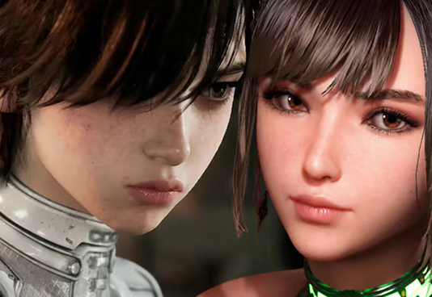
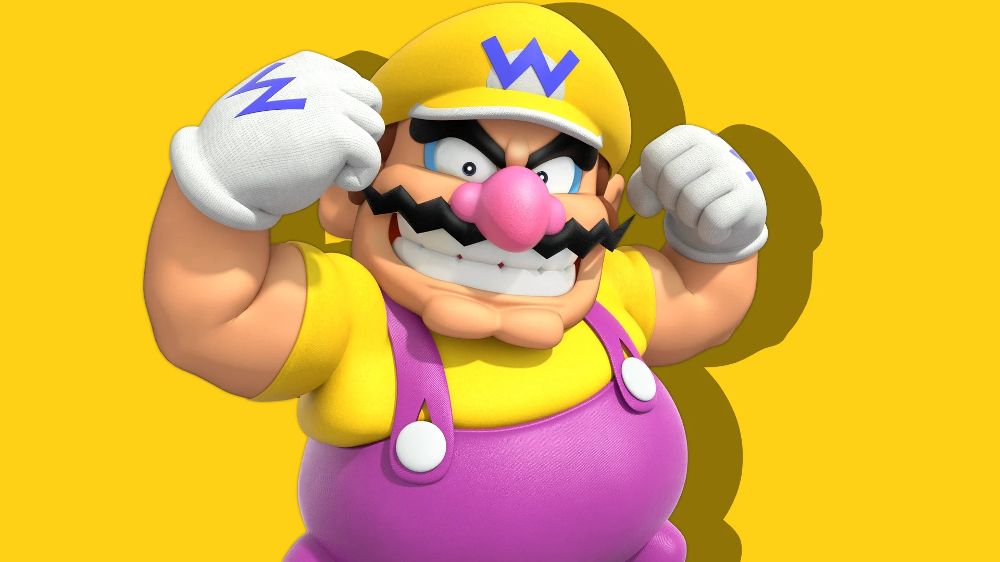
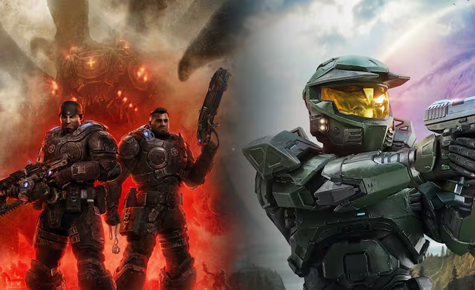
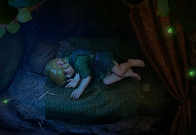
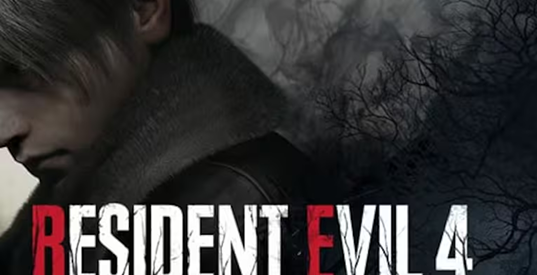

/ Noticias mejor valoradas del día

Director de Stellar Blade: BLOOD RAIN defiende el diseño de Evie, y
promete que la secuela tendrá trajes “más atractivos” que los de EVE
Hace 3 horas

Un reconocido filtrador emociona a los fans con un posible regreso de Wario
Hace 4 horas

XBOX por fin habla de The Elders Scrolls VI y dejó una frase que dispara el hype: "luce increíble"
Hace 1 hora
Afirman que el nuevo Ace Attorney sigue vivo y podría revelarse muy pronto
Hace 15 horas
/ Noticias

Jugadores filtraron la primera misión de 007 First Light y así fue
como respondió IO Interactive ante la provocación
El estudio no se quedó de brazos cruzados mientras algunos querían
arruinar la sorpresa
Hace 3 horas
Call of Duty: Black Ops 1 y 2 se filtran en la PSN y su estreno en
PS4 y PS5 podría ser inminente
Nuevas pistas adelantan que Activision podría preparar un
relanzamiento de los videojuegos clásicos de la franquicia
Hace 15 minutos

El remake de The Legend of Zelda: Ocarina of Time es real y debutará
este año, ¿será exclusivo de Nintendo Switch 2?
La nueva versión del clásico de 1998 cerró el Nintendo Direct
Hace 1 hora
XBOX Game Pass tendrá otros cambios para ser más accesible: Asha Sharma confirma su plan para mejorar el servicio este año
La jefa de XBOX hizo una importante promesa a los suscriptores de la plataforma
Hace 1 hora
Steam eliminará una de las mejores formas de agregar fondos a la cuenta y comprar juegos digitales en PC por culpa de los estafadores
Valve comenta que el producto aún funcionará, pero no tiene planes de restablecer el inventario y espera que todas las unidades se agoten en 2026
Hace 23 horas
Super Mario Galaxy: la película fue destrozada por la crítia y fans, pero es un éxito y acaba de lograr lo que ningún otro estreno de 2026
La cinta animada de Illumination y Nintendo tuvo dificultades para contentar a los expertos, pero enamoró a la audiencia y recaudó millones de dólares
Hace 25 minutos

Un conocido insider vuelve a emocionar a los fans: los remakes de Resident Evil seguirían en camino a Nintendo Switch 2
NateTheHate asegura que algunas entregas de la saga siguen en desarrollo para la consola híbrida
Hace 56 minutos
¿The Last of Us en HBO fue cancelada tras las polémicas? Pausan la producción de la tercera temporada y los fanáticos reaccionan con miedo
El estreno de los nuevos episodios de la serie live-action de HBO Max están previstos para 2027, pero reportes recientes causaron mucha preocupación
Hace 23 horas